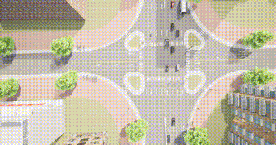

路口微观3D 动画演示运动场景spectator.py
介绍
此脚本连接到CARLA仿真环境，并定期切换湖工商附近的四个预设路口视角。通过不断改变观众（Spectator）的视角，用户可以观察到不同路口的交通状况。
-
环境要求
-
Python 3.6 及以上版本
-
CARLA 仿真环境
-
安装必要的Python库：
-
湖工商场景(WindowsNoEditor)，并运行generate_traffic.py
-
安装必要的python库
pip install carla
运行
此示例支持设置 spectator 视角来观察交通路口运动情形。
以下示例通过预定义 spectator 对象视角的位置 Location 和旋转角度 pitch 来进行视角的更换
client = carla.Client('localhost', 2000)
client.set_timeout(10)
world = client.get_world()
spectator_transform = [
carla.Transform(carla.Location(x=-323, y=-15.7, z=108), carla.Rotation(pitch=-90)),
carla.Transform(carla.Location(x=-359.6, y=391.3, z=94), carla.Rotation(pitch=-90)),
carla.Transform(carla.Location(x=426.2, y=-33.4, z=91.6), carla.Rotation(pitch=-90)),
carla.Transform(carla.Location(x=375.1, y=-558.4, z=91.6), carla.Rotation(pitch=-90))
]
spectator = world.get_spectator()
spectator.set_transform(spectator_transform[0])
定期切换视角
脚本将连接到CARLA服务器，并每5秒切换一次预设的观众视角。
start_time = time.time()
state = 0
while True:
elapsed_time = time.time() - start_time
if elapsed_time >= 5:
spectator.set_transform(spectator_transform[state])
state += 1
if state > 3:
state = 0
start_time = time.time()
运行结果：
